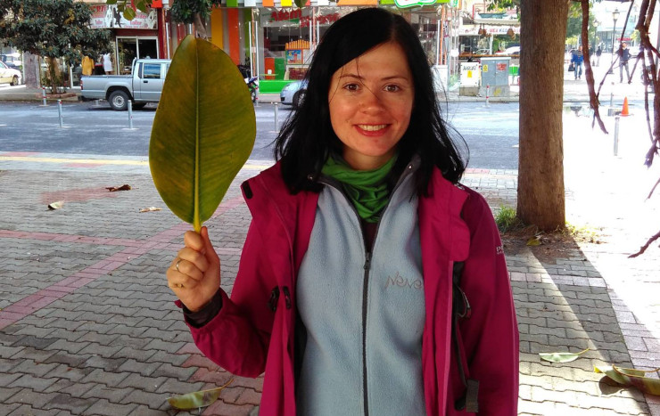
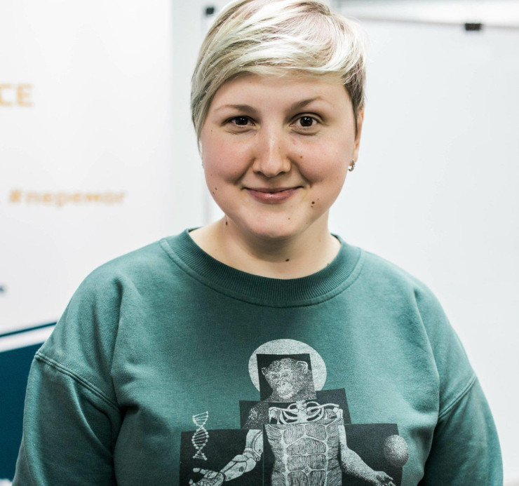
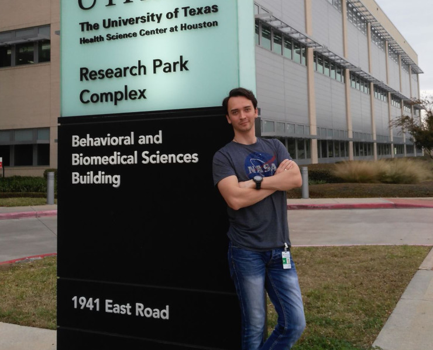
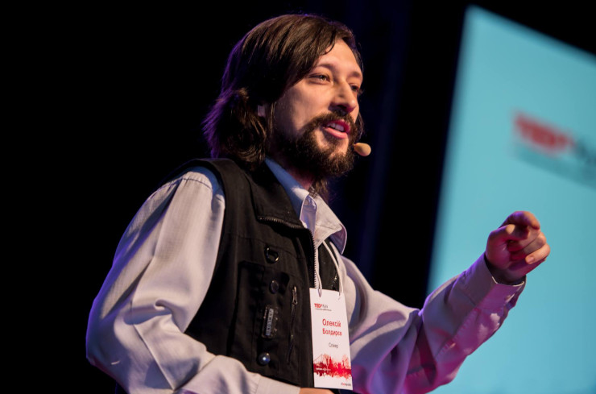
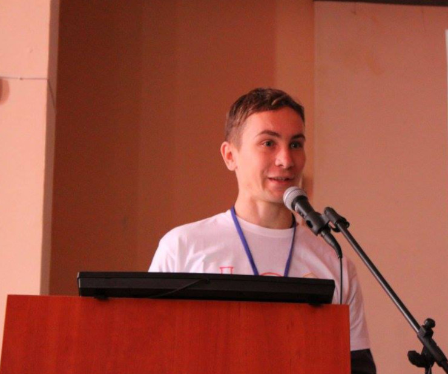
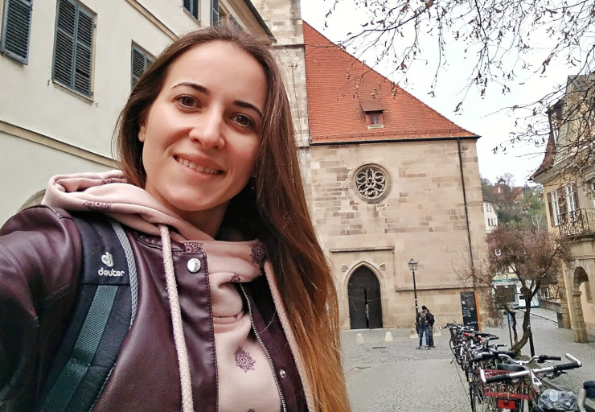

Animal testing: проводити не можна заборонити
Молекулярний біолог Анна Муха, працює в Дрездені (Німеччина) у сфері онкологічних досліджень, зокрема радіаційної терапії онкологічних захворювань.

"у наших дослідженнях ми працюємо із лабораторними мишами та, рідше, щурами. Перш ніж як будь-який антираковий препарат увійде в першу стадію клінічних досліджень (на добровольцях-пацієнтах), його ефективність та безпечність обов'язково перевіряється на тваринах.
У сфері радіаційних досліджень в онкології дуже важливо вивчити відповідь нормальних тканин на радіотерапію. Пухлина, яку лікують радіаційними променями, знаходиться в тілі пацієнта, і променю, аби потрапити до самої пухлини, слід пройти крізь нормальні, не пухлинні тканини пацієнта. Зрозуміло, що ці тканини від цього страждають, як, власне, і пацієнти. Поки дослідити це можна лише на тваринах"
Одразу слід зазначити, що в ЄС існує Федерація (FELASA), яка відповідає за розробку і впровадження нормативних документів, які суворо регулюють порядок і правила роботи із тваринами. Головні принципи, які лежать в основі усіх цих документів, називаються <<3R>>: Reduction (зменшення), Replacement (заміна), Refinement (використання методів, найменш травматичних для фізичного і психічного здоров'я тварин). Правило зменшення говорить, що перш ніж ставити дослід на тваринах, дослідник має впевнитись, що цей дослід абсолютно необхідний, і не існує методів, які могли б його замінити. Наприклад, якщо досліднику потрібно отримати дуже приблизні дані щодо токсичності якогось препарату для ракових клітин, то зовсім необов'язково одразу колоти його в мишу – такі дані можна отримати на культурах клітин та інших клітинних моделях in vitro. А якщо треба визначити, чи викликає якась субстанція або мутація у певному гені розвиток пухлин шкіри, то тут уже без тварин не обійтися.
Правило заміни передбачає використання будь-яких інших методів дослідження, що можуть замінити тваринні моделі на даному етапі дослідження. І нарешті правило удосконалення, або ж гуманізації при підготовці та проведенні експерименту – тут йдеться про використання найменш травматичних методів, мінімізація шкоди та болю, застосування знеболюючих та седаційних засобів.
Оксана Пальчевська, к.б.н., співробітниця Міжнародного Інституту молекулярної і клітинної біології у Варшаві додає:
"На відміну від численних зоорозплідників чи навіть іноді і домашніх тварин, піддослідні тварини завжди доглянуті, ситі і про їх комфорт дбають. Це важливо і для успіху та інтерпретації результатів самих експериментів. Тварин, які залучені у негострі експерименти та із контрольних груп, ніхто не вбиває, вони доживають свого віку, іноді можуть бути залучені повторно чи можуть бути віддані на адаптацію. У Польші існує спеціальна система курсів і заходів під егідою polLASA. Щоб дослідника допустили працювати з тваринами, йому необхідно пройти сім кіл дантового пекла".
"В Україні поки справді існує проблема належного утримування піддослідних тварин. До прикладу, доросла мишка (25-30 г) має мати принаймні 80 см 2 на кожну тваринку. Також має бути наявність сховчих будиночків у кожній клітці... Але це питання дотримання цих належних умов, а не питання власне самого animal testing".
Сама Оксана Пальчевська певний час займалася дослідженням мутацій, що регулюють функціонування кардіоміоцитів. Ці дослідження проводилися із залученням геномодифікованих мишей. Але, за її словами, у світі вже існують дослідження, що проводяться на вирощених перепрограмованих кардіоміоцитах. Деякі етапи тестування лікарських засобів можна справді проводити на них.
Ще одна сфера, що бурхливо розвивається – сучасна ембріологія і технології штучного запліднення. Можливі вони виключно дякуючи початковій роботі з тваринами. Перші дослідження Роберта Едвардса, що отримав Нобелівську премію за розробку технології штучного запліднення, були присвячені ембріональному розвитку мишей. Завдяки цим дослідженням першій <<дитині з пробірки>> уже 41 рік, а у світі таких дітей близько 8 мільйонів.
Клінічний ембріолог Ольга Малюта, яка безпосередньо причетна до появи десятків дітей з пробірки в Україні, зазначає:
"Сьогодні кожне поживне середовище в якому культивуються людські ембріони, кожен реагент, все обладнання лабораторії та кожен інструмент тестують на безпечність саме на мишиних ембріонах. Знайти альтернативу для таких тестувань не буде можливо ще досить довгий час. І чи будуть такі <<не протестовані>> середовища безпечні для людських ембріонів сказати буде важко."

Використовують також інші моделі, наприклад, методика генетичного аналізу ембріонів перед підсадкою в матку пацієнтки, щоб відібрати лише генетично здоровий ембріон, була розроблена і протестована на кролях.
А є дослідження, початкові етапи яких можна провести лише на ембріонах вищих приматів, через значні відмінності в процесах дозрівання яйцеклітин у людини та мишей.
Робота з яйцеклітинами донорів і донорськими ембріонами це неймовірна розкіш, бо виникає ще більше етичних питань і вартість досліджень непомірно велика.
Засади роботи з тваринами в ембріології це, звісно, безболісність всіх процедур отримання яйцеклітин і оперативних втручань.
Дмитро Ісаєв, к.б.н., співробітник Інституту фізіології ім. О.О. Богомольця НАН України працював з великою кількістю тваринних моделей.Із епілептичними моделями на гризунах має справу близько 15 років. Це дуже близько до того, що буває з людьми під час цих розладів. А моделювання епілептичного нападу на культурі клітин є неефективним.
Разом із колегами досліджували вплив нейрамінідази (ферменту, що відрізає сіалові кислоти, які у великій кількості присутні на мембрані нейронів ссавців, ну і людей також) на вірогідність нападів. Дія всім відомого препарату таміфлю полягає у блокуванні вірусної нейрамінідази, яку вони продукують для проникнення у клітину. Між тим, ці дослідження на щурах показали, що зменшення кількості нейрамінідази збільшує вірогідність епілептичних нападів. Але відомо, що таміфлю майже не блокує людську нейрамінідазу, тільки вірусну, та тому вважається безпечним. Однак однією із побічних дій таміфлю і є епілептичні напади. Причина цього була невідома. Деякі люди мають мутацію у гені, що кодує нейрамінідазу, і їх фермент схожий на вірусний. Проведені дослідження на щурах дозволили з'ясувати механізм дії нейрамінідази і її блокаторів на активність нервової мережі та проепілептичний механізм блокаторів цієї сполуки. Без дослідів на тваринах це неможливо було б зробити.
"Нові лікарські засоби та методи лікування все одно доводиться на чомусь тестувати. Якщо не на тваринах, то треба тестувати на людях. Або ж закривати усі біо-медичні заклади та жити з тими знаннями, що є зараз. Люди, що закликають до заборони дослідів на тваринах мають велике серце, але іноді мало розуму. Організації по захисту тварин від науки, відомі своєю кримінальною репутацією у світі, сотні активістів зоозахисників знаходяться у міжнародному розшуку та звинувачуються Федеральним Бюро Розслідувань у діяльності, пов'язаній з тероризмом. Підтримуючи організації, що наполягають на забороні дослідів на тваринах, можливо, ви спонсоруєте тероризм. Замисліться над цим"
К. б. н., співробітник Інституту біохімії ім. О.В. Палладіна НАН України Кирило Пиршев тривалий час був залучений до роботи в колективах, де тварини є основою для досліджень, зокрема в групі відомого професора Яанг Ксії (Yang Xia) із Техаського Університету Здоров'я (The University of Texas Health Science Center at Houston McGovern Medical School Department of Biochemistry and Molecular Biology). Ця група науковців працює над дослідженнями, пов'язаними із преаклампсією, серповидно-клітинною анемією, серцевими захворюваннями, сепсисом, гіпоксією, порушенням сигналінгу окремих молекул. Завдяки цим дослідженням сьогодні детально вивчено механізми, які лежать в основі цих порушень та запропоновано нові підходи для подолання низки різних патологічних станів. 
"Щ иро люблю тварин (як і більшість науковців), тому робота з тваринами не є чимось на кшталт "зову предків", а необхідністю для ефективного виживання людства."
Наразі справді існує неймовірна кількість підходів та експериментальних моделей, які дозволяють істотно скоротити залучення тварин. Найчастіше моделі in vitro включають в себе культури клітин, численні біохімічні та молекулярні методи – для вивчення окремих ланок сигнальних реакцій, структурної організації макромолекул та надмолекулярних комплексів. Із більш складних систем варто відзначити органоїди, які є спрощеною трьох-вимірною моделлю органу. Окремим потужним напрямком є дослідження in silico, або ж іншими словами, комп'ютерне моделювання.
Однак, ці всі методи жодним чином не замінюють тварин і мають свої обмеження. Наприклад, комп'ютерне моделювання розширює можливості скринінгу сполук та передбачень властивостей молекул. Але для перевірки кінцевих результатів потрібні досліди на тваринах.
Органоїди не є повноцінними моделями органів, оскільки позбавлені багатьох їх ознак та залученості в складні біохімічні взаємодії, як це відбувається в живому організмі. Вони не інформативні для вивчення можливого впливу нових препаратів на когнітивні функції та для дослідження системних хвороб.
А що стосується популярного питання про тестування косметичних засобів , то зважаючи на дані наведені вище, косметика без належного випробування на тваринах не може бути на 100% безпечною. Це можливо тільки за умови використання вже добре відомих компонентів, які були вивчені на тих самих тваринах, але раніше. У всіх інших випадках, коли йде мова про залученння інновацій, ці тестування потрібні.
Андрій Чернінський, к.б.н., співробітник Інституту фізіології ім. О.О. Богомольця НАН України звертає нашу увагу і на те, що для робота із будь-якими "нетваринними" моделями все одно передбачає залучення тварин, хоч і у меншій кількості та опосередковано.
Так, для середовищ, у яких вирощуються культури клітин, потрібні компоненти тваринного походження (примітка від Анни Мухи: один із таких компонетів – FBS (fetal bovine serum), або ж сироватка крові ненароджених телят). Та і власне, ці самі культури клітин отримуються переважно від тварин.
Амбітним завданням двох глобальних проектів в галузі нейронаук, які наразі здійснюються в ЄС та США, є побудова математичної моделі головного мозку людини. Це може дозволити, наприклад, симуляційно досліджувати вплив різних сполук, дію яких на рівні молекул або клітин ми вже знаємо. Мало перспективні варіанти можна буде відкинути, відтак не проводити відповідні дослідження із залученням лабораторних тварин. Проте, для того, щоб така система більш-менш стабільно запрацювала, потрібні масиви експериментальних даних – знову ж таки, отриманих у дослідах на тваринах.
Популярними зараз є відкриті бази "сирих" даних, в які дослідники можуть завантажити отримані результати, і будь-хто інший може використати їх для власного дослідження. Це дозволяє не проводити повторні експерименти і економити кількість використаних тварин.
"Заклики до повного припинення тестування на тваринах є еквівалентними до закликів повністю зупинити розвиток медицини."
"Я можу описати свій досвід роботи в Університеті Цюриха (Швейцарія). Усі підрозділи, що працюють із тваринами, отримують і регулярно поновлюють ліцензію на проведення експериментів. Уся інформація про тварин зберігається в спеціалізованій системі. Кожна тварина має вживлений чіп, з якого можна прочитати її ідентифікатор, та за ним визначити, звідки вона поступила, які її особливості (наприклад, генні модифікації), який дослідник які експерименти з нею проводить. Регламентовані найдрібніші умови утримання тварин. Приміром, у мишей в клітках обов'язково повинен бути папір або картон — з нього вони створюють собі комфортні кубла. Оскільки ці тварини є соціальними, вони повинні утримуватися групами. Деякі експерименти вимагають поодинокого утримання (наприклад, у післяопераційний період для запобігання травмування одне одним), але це стресує тварин. Система відслідковує такі нюанси, і відповідальному науковцю приходить запит, чи є потреба продовження утримання тварин поодинці.
Окрім утримування, існують інструкції до проведення хірургічних операцій та власне експериментальних процедур. Врешті, провідні журнали не приймуть до публікації результати, якими б цікавими вони не були, отримані із порушенням етичних норм"
К.б.н. співробітник Інституту фізіології ім. О.О. Богомольця НАН України Олексій Болдирєв звертає увагу ще й на "несподіване" для деяких зоозахисників питання розробки препаратів власне для ветеринарії: ветеринари в зоопарках, притулках для диких тварин, у звичайних клініках для кішечок/собачок/черепашок мають лікувати своїх хребетних пацієнтів. Знання про ліки для домашніх улюбленців не падають з неба. Ці ліки потрібно тестувати на... тваринах. Тому для того, щоб полікувати Вашу любу кішечку, потрібні препарати, які обов'язково пройшли тестування на інших кішечках.
Що стосується двоногих пацієнтів, то, наприклад, системні ускладнення цукрового діабету для серця, сечового міхура, нервової системи, які досліджує з колегами пан Олексій, можливо вивчати або із залученням генетично модифікованих щурів, у яких діабет передається спадково, або шляхом ін'єкцій отруйних речовин, що викликають порушення в регуляції рівня глюкози в крові. Діабет зараз одна з найпоширеніших хвороб і мільйони пацієнтів чекають на ефективне та безпечне лікування.

"Моя дисертація була присвячена вивченню механізмів виникнення одного з видів епілепсії – абсансної, яка характерна здебільшого для дітей. Для цього ми використовували лінію щурів WAG/Rij, у яких симптоми, схожі на людське захворювання, є вродженими, тобто передаються генетично. Такі дослідження вкрай важливі для створення нових безпечних ліків проти цього типу епілепсії".
"Захист прав тварин – це свідчення гуманізації суспільства, тому я всіляко підтримую заборону дельфінаріїв, введення відповідальності жорстокого поводження з домашніми тваринами, обмеження хутряного бізнесу. Разом з тим закликаю бути обережними.
З одного боку, захист прав тварин є нерівномірним: ми всі страждаємо на так званий <<хребетний шовінізм>>. Ми готові захищати права лабораторних щурів, яких дехто ніколи не бачив, але з жахом вбиваємо капцем таргана чи павука. Якщо пес скавчить, а риба мовчить, нам здається, що в першого <<прав більше>>. Ми орієнтуємося на антропоморфні деталі поведінки, за ними визначаємо біль та страждання. В цілому, це правильно, бо іншого виходу нема. Проте нумо все ж пам'ятати й про більш далеких від нас еволюційних родичів.
Іншим аспектом є сама гуманізація. Згадуючи про права тварин, не забуваймо про попередній, не менш важливий етап нашої еволюції – права людини. Вбити всіх людей, хто образив тваринку, не вихід."
"Треба згадати, що в природі життя тварини – не цукор. Тварині весь час загрожують хижаки, паразити, голод, хвороби, несприятливий клімат. Із сотень народжених тварин одиниці доживають до власного періоду розмноження. Наприклад, дослідження кроликів у Великій Британії показало, що середня тривалість життя від народження до смерті складає всього 49 днів, менше 2 місяців! Натомість тваринам у лабораторіях майже нічого не загрожує й живуть вони зазвичай набагато довше своїх диких братів і сестер. Рекомендую всім читати книжки Джералда Даррелла, де він детально й з гумором розглядає цю непросту дилему виживання й загибелі тварин у природі та неволі".
Олександр Скороход, к.б.н. співробітник Інституту молекулярної біології і генетики НАН України займається дослідженням сигнальних шляхів, які залучені у процесах росту клітин, синтезу білків та онкоутворення. У своїй роботі застосовує широченний спектр методів, серед яких молекулярно-біологічні (ПЛР, ПЛР в реальному часі, клонування білків), біохімічні (кіназна реакція), цитогенетичні (конфокальна мікроскопія, робота з культурами клітин), біоінформатичні, а також досліди із залученням тварин. Зокрема, за допомогою гібридомної технології дослідники отримують моноклональні антитіла. Цей процес відбувається в ході кількамісячних експериментів із лабораторними мишками.
Отримання таких антитіл – це можливості для широкого спектру досліджень. Зокрема, для фундаментальної науки – це вивчення функцій окремих білків (яке можна проводити in vitro – на культурах клітин). Для прикладної науки, медицини – діагностика захворювань крові та лікування онкологічних, ревматологічних, деяких неврологічних захворювань. Окрім того, ці антитіла застосовуються у трансплантології – для попередження відторгнення трансплантатів.

"Ми могли б не проводити цю частину нашої роботи із тваринами, а почекати, коли з'являться <<комерційні>> моноклональні антитіла (або їх замовити). Однак треба розуміти, що ці антитіла будуть отримані за тією самою гібридомною технологією але фірмами, що на цьому спеціалізуються. Це так само – вбивство тварин в <<промислових масштабах>> але не нами – ми тільки маємо заплатити гроші і якусь кількість антитіл купити для досліджень. Крім того – при цьому варіанті ми втрачаємо час"
Катерина Успенська, к.б.н. дослідниця із Інституту біохімії ім. О.В. Палладіна НАН України вивчає роль рецепторів (нікотинового ацетилхолінового) у процесах нейрозапалення та регенерації клітин.

"Не можна обійтися без тварин у поведінкових тестах. Однак вважаю, що не варто тестувати те, що було вже протестовано.
Треба замінювати тварин на клітини всюди, де це можливо, і лише фінальні результати перевіряти на тваринах"
Пані Катерина додає, що тварини у віваріях мають постійний доступ до свіжої води та корму, що в природі буває не так часто. Миші можуть місяцями жити без жодного втручання, чого в природі взагалі не буває. Домашніх гризунів часто утримують поодинці. А любителі цих тваринок часто зовсім не здогадуються, що для щуриків та мишок це стрес – вони соціальні і їм необхідно жити невеликими групами.
І наостанок.
Чомусь багато хто вважає, що науковці обожнюють робити досліди на тваринах, і їм подобається завдавати тваринам страждань.
Але проведення дослідів на тваринах – це не питання забаганок та розкошів, як наприклад, виробництво хутра, чи розваги, як дельфінарії чи цирк, і навіть не гастрономічних уподобань, як це може стосуватися фермерських господарств, де тваринам теж не завжди солодко. Обґрунтоване залучення тварин у наукові дослідження із застосуванням сучасних протоколів – це можливість для наукового прогресу і отримання ефективних та безпечних ліків для кожного з нас і наших близьких.